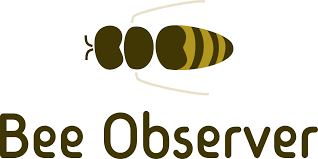

Extracting insights from dirty data - A use case of multisensory data from beehives
28 November 2020
Preface


This is a slightly adjusted version of my Master’s thesis in the study programme “Big Data and Business Analytics” at SRH Hochschule Heidelberg, submitted on 28 October and defended on 16 November 2020. The thesis was reviewed by Sven Garbade.
Acknowledgments
I would like to thank my project team colleague Diren Senger, my brother Andreas Melemenidis and my good friends Daniela Arru and Mario Morelli for their useful written comments, as well as Alexander Goncharskiy for volunteering as external reviewer of this thesis.
Further I want to express my gratitude to André Lange, founder of the Rhein-Main local chapter of Correlaid e.V., for helping me find this project on short notice.